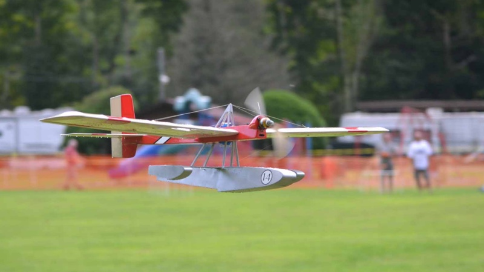

|
The construction article for Harry Stewart's Splash-E originally appeared in Fly RC magazine in June 2004. When Harry and I first discussed publishing the design, he offered to build a second airframe to ensure the parts as drawn would actually build into a finished airframe, and to document the build. Once he had the required photos and was satisfied that the design worked, he packed up the test airframe and generously sent it to me at the Fly RC offices.
Needless to say, I was thrilled. Most of the work was done, and it looked like just a few evenings in the workshop would yield another unique watercraft for my collection. Unfortunately, working at the magazine was pretty much all consuming, and Harry's Splash-E airframe slowly gathered dust in my workshop, watching a seemingly endless parade of ARFs march across my workbench. Every once in a while I would pull its box down off the shelf right after a deadline passed, and think to myself, "I really need to get this finished up" as I put it back up on the shelf. I would even pick at it a bit from time to time. My original plan was to stain the main float to look like a varnished mahogany hull, and after a couple of years I dusted it off and got the color onto the balsa, followed by a layer of light fiberglass. About that time I realized I didn't have the color right. Back in the box and onto the shelf it went again, though still with all good intentions to get back on it someday soon.
Well, someday finally arrived, and in August of 2018 I pulled the box off the shelf for the last time. I had a few weeks to go until NEAT, and decided it was time to get this waterbird done and into the pond. After struggling with finishing the float, I switched gears on the the color scheme, and decided to go with a racing theme. I figured the main float of a full scale version might well have been aluminum, and so gave it a shot with a rattle can for the bare metal look. The rest of the model is covered with Lightex from
And yes, for those wondering, the race number does represent the 14 years of distraction before I finally got this fun little flyer done and into the air. Sorry about that Harry! Despite still needing a pilot and wind screen, the Splash-E is a delight to fly, has great manners on the water, and looks just fantastic on a long flat approach. I look forward to many enjoyable sessions at the local pond with this one!
If you want one of your own, laser cut kits are available from BMJR Models.
Stats on my version are as follows. |
| Wing Span | - | 44 in | Motor | - | AXI 2208/20 | |||||
| Wing Area | - | 324 sq in | Prop | - | APC 9x6 | |||||
| Weight | - | 16 oz | Battery | - | 2S 2000mAh | |||||
| Wing Loading | - | 7.11 oz/sq ft | Duration | - | 15 min | |||||
| Cube Loading | - | 4.7 | Servos | - | 3x Hitec HS-55 | |||||
| Length | - | 29 ½ in | Receiver | - | Hitec Minima 6 | |||||

A special thanks to Terry Dunn for capturing the Splash-E in action at the 2019 NEAT Fair.
return to
Copyright 2020, Thayer Syme. All rights reserved